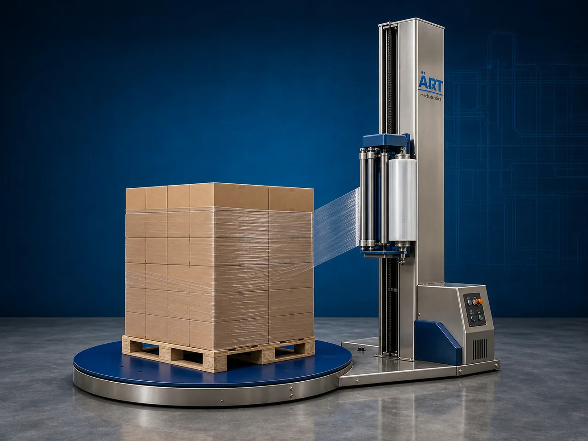

Stretch Film Wrapping Machine for Sacks & Bags (Automatic Pallet Wrapping System)
A Stretch Film Wrapping Machine for Sacks & Bags, also known as a Pallet Wrapping Machine, Stretch Wrapping Machine, Pallet Stretch Wrapper, or Automatic Load Wrapping System, is an advanced industrial packaging solution designed for automatic pallet wrapping, load stabilization, stretch film application, product securing, and end-of-line packaging operations for sacks, bags, cartons, bulk packages, and warehouse shipment applications.

About the Stretch Wrapping
Stretch film wrapping systems are widely used for:
- Sack pallet wrapping
- Bag load stabilization
- Warehouse pallet packaging
- Bulk shipment wrapping
- Export packaging operations
- FMCG pallet wrapping
- Cement bag pallet wrapping
- Fertilizer bag load securing
The machine improves:
- Shipment safety
- Load stability
- Product protection
- Moisture and dust protection
- Packaging consistency
- Warehouse efficiency
- Dispatch handling efficiency
Industrial stretch film wrapping machines use:
- Servo synchronized turntable systems
- Automatic stretch film dispensing units
- PLC and HMI automation controls
- Load height sensing systems
- Film tension control mechanisms
to automatically wrap palletized sacks and bags with stretch film for superior transportation safety and warehouse handling efficiency.
Stretch film wrapping machines for sacks and bags are widely used in industries such as:
Cement industries Fertilizer industries Chemical industries Food processing industries Animal feed industries Agriculture industries Construction material industries Warehouse and logistics industries
where secure pallet packaging and shipment protection are essential.
The machine is highly suitable for:
- Cement sack pallet wrapping
- Fertilizer bag wrapping
- Grain bag pallet packaging
- FMCG shipment wrapping
- Warehouse load stabilization
- Export pallet packaging
ART Mechatronics offers high-performance stretch film wrapping machines for sacks & bags, engineered for continuous industrial operation, strong load securing performance, durable construction, and reliable long-term packaging automation.
Working Principle of Stretch Film Wrapping Machine
- 1. Pallet Loading Palletized sacks or bags are placed onto wrapping platform manually or automatically.
- 2. Film Stretching Process Machine automatically dispenses and stretches film around palletized load.
Servo synchronization ensures uniform film tension and secure wrapping quality.
- 3. Pallet Wrapping Operation Machine handles: ✔ Sack pallets ✔ Bag pallets ✔ Carton pallets ✔ FMCG loads ✔ Cement bags ✔ Fertilizer bags ✔ Warehouse shipments
accurately and continuously.
- 4. Load Stabilization & Film Sealing Machine performs: Stretch wrapping Load securing Film cutting Film sealing
for stable and secure transportation packaging.
- 5. Conveyor & Warehouse Integration Wrapped pallets transferred automatically through: Roller conveyors Chain conveyors Pallet handling systems Warehouse automation systems
- 6. Finished Pallet Discharge Finished wrapped pallets discharged automatically for: Warehouse storage Truck loading Dispatch operations Export shipment handling
Types of Stretch Film Wrapping Machines
- 1. Turntable Stretch Wrapping Machine Designed for: ✔ Standard pallet wrapping applications
- 2. Rotary Arm Stretch Wrapper Suitable for: ✔ Heavy and unstable pallet load wrapping systems
- 3. Automatic Pallet Wrapping Machine Uses: ✔ High-speed industrial pallet packaging systems
- 4. Conveyorized Stretch Wrapper Designed for: ✔ Continuous warehouse and dispatch automation systems
- 5. Servo Driven Stretch Wrapping Machine Suitable for: ✔ Precision high-speed wrapping operations
- 6. Fully Automatic Stretch Wrapping System Designed for: ✔ Complete end-of-line pallet packaging automation lines
Industries Using Stretch Film Wrapping Machines
🏗️ Cement & Construction Industry Cement bags, mortar bags, gypsum products, and construction material pallet wrapping systems. 🌱 Fertilizer Industry Fertilizer bag load securing and shipment wrapping systems. ⚗️ Chemical Industry Chemical sacks, industrial powders, and bulk material pallet packaging systems. 🐄 Animal Feed Industry Animal feed sacks and bulk nutrition product pallet wrapping systems. 🌾 Agriculture Industry Seed bags, grain sacks, and agricultural bulk packaging systems. 🛒 FMCG & Warehouse Industry Retail product pallet wrapping and warehouse shipment stabilization systems.
Features & Advantages
- High-speed automatic pallet wrapping operation
- Strong and secure load stabilization performance
- Excellent dust and moisture protection
- PLC and servo automation control systems
- Improves warehouse and dispatch efficiency
- Reduces labor dependency and packaging damage
- Supports multiple pallet sizes and load formats
- Reliable long-term industrial performance
- Continuous end-of-line packaging operation
Technical Highlights
Machine Type: Automatic stretch film wrapping machine Industrial pallet wrapping machine Load stabilization system Packaging Material: LLDPE stretch films Pallet wrapping films Industrial stretch films Features: PLC control system Servo synchronization Touchscreen HMI Automatic film cutting Load height sensing system Handling Integration: Roller conveyors Chain conveyors Warehouse automation systems Applications: Sacks Bags Cartons Pallet loads Warehouse shipments Automation: Semi-automatic Fully automatic industrial systems
Turnkey Stretch Wrapping Solutions
ART Mechatronics offers: Complete pallet wrapping systems Automatic stretch wrapping solutions Packaging automation integration systems Conveyor synchronization systems Installation & commissioning After-sales service & AMC
Why Choose Art Mechatronics
Expertise in industrial packaging and automation systems Customized stretch wrapping solutions for multiple industries High-performance and durable wrapping technology Advanced PLC and servo automation systems Proven industrial packaging performance across sectors
Applications
Cement Manufacturing Plants Fertilizer Manufacturing Units Chemical Industries Food Processing Industries Warehouse & Logistics Facilities Animal Feed Industries
Get pricing & specs for the Stretch Wrapping
Share the product, target capacity, current process and plant location. These details help our engineers discuss the right machine or line configuration.
One partner, from design to start-up
ART Mechatronics designs, manufactures, installs and commissions your Stretch Wrapping solution with regional presence in India, UAE and Thailand.